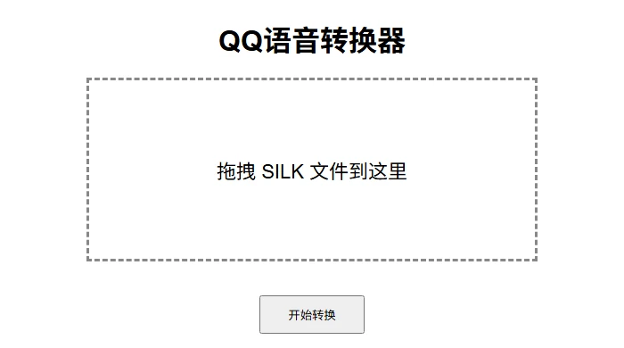

PROJECT 06 — WEB TOOL
在线语音转换 QQVOICE WEB
不想装软件的话，打开网页，把 .silk 拖进去，转完打包下载。

它做什么
一个居中的拖放框，加一个上传按钮。可以一次放多个 .silk，检测到文件头之后批量解码，最后打成一个 zip 给你下载。
不上传第三方、不保存文件：转换在内存里完成，请求结束就没了。
怎么做的
Flask 只提供两个路由：页面和转换。转换时逐个读取、pysilk 解码、写进内存里的 zip；文件名重复就加序号。模板刻意做得克制，一屏放下说明、拖放框和按钮。
项目里带 runtime.txt，固定在 Render 的免费实例上跑，不需要数据库。
能少装一个软件，就少装一个。
踩过的坑
- 免费实例会休眠，第一次打开要等十几秒，得在页面上说清楚。
- 上传体积有上限，超过时要明确拒绝，而不是转到一半失败。
- 并发转换会吃内存，简单加一个队列比堆机器便宜。
- 有些文件名是中文，zip 里的编码要统一。
这个页面和桌面版共用同一套解码逻辑，只是把「保存到本地」换成了「打包给你」。